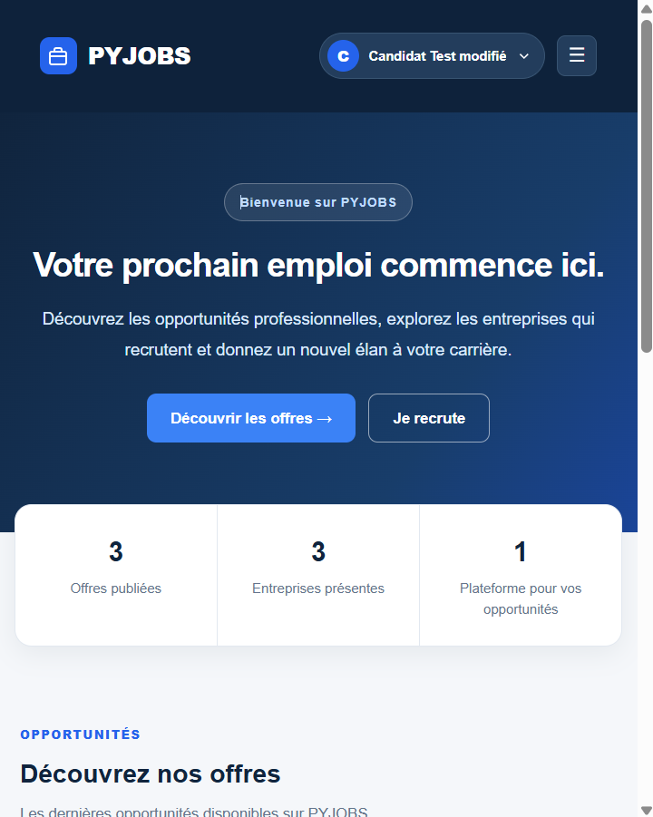
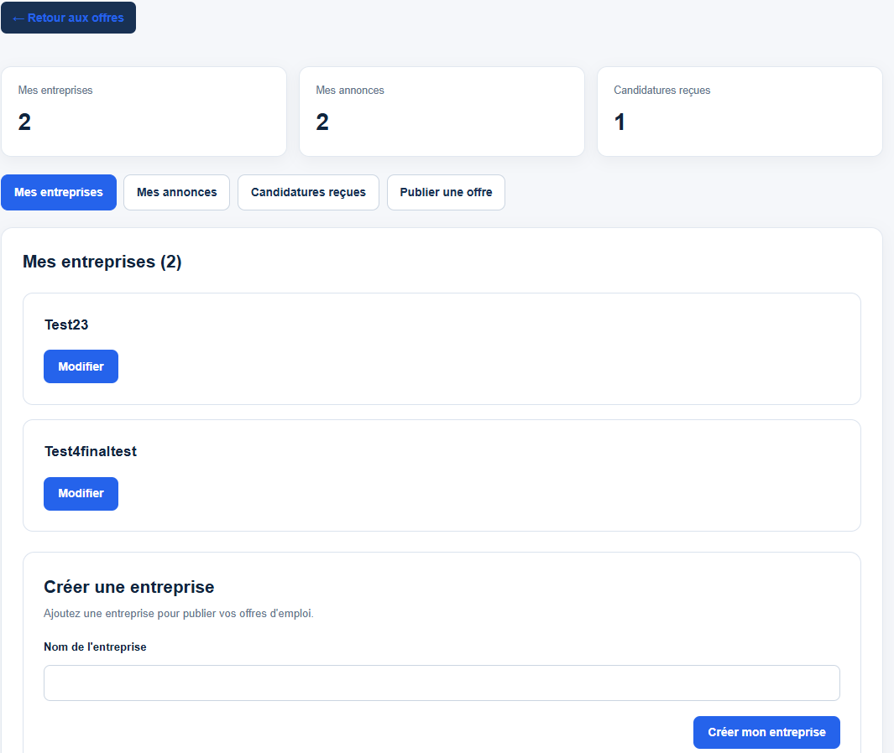
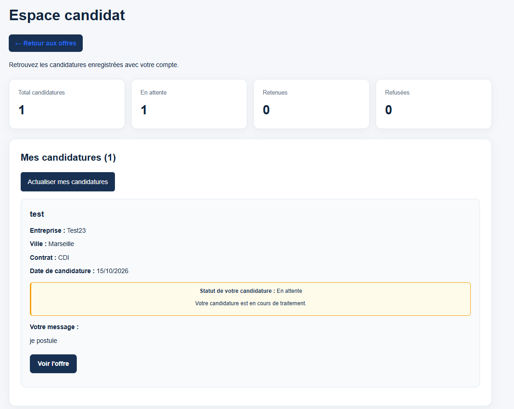

Une sélection de projets réalisés à Epitech et en autonomie, qui illustrent mes compétences en
développement et en conception de produits numériques.
PYJOBS — Job Board

Accueil — Présentation de la plateforme et découverte des offres d'emploi.

Espace employeur — Gestion des entreprises, des annonces et des candidatures reçues.

Espace candidat — Consultation des candidatures et suivi de leur statut.
1 / 3
React • JavaScript • Vite • API REST Django • Git
Contexte et objectif
Développement d'une plateforme de recrutement dans le cadre de ma formation à Epitech. L'objectif
était de créer une application web permettant aux entreprises de publier des offres d'emploi et aux
candidats de postuler.
Ce que j'ai réalisé
J’ai développé des fonctionnalités du frontend React et intégré les échanges avec une API Django
REST réalisée en équipe. J’ai travaillé sur les parcours candidat et employeur : consultation des
offres, filtres de recherche, formulaires de candidature, authentification et tableaux de bord. J’ai
également participé aux tests des permissions et des échanges frontend/backend.
Ce que j'ai appris
J’ai approfondi React (composants, états, formulaires), les appels API REST, la gestion des droits
selon les rôles, les tests fonctionnels et la collaboration avec Git. J’ai appris à relier une
interface à un serveur et à diagnostiquer les erreurs entre les deux.
Réalisation d'un jeu du Pendu en Python dans le cadre de ma formation à Epitech. L'objectif était de
mettre en pratique les fondamentaux de la programmation en développant une application interactive.
Ce que j'ai réalisé
Le projet permet de sélectionner aléatoirement un mot, de gérer les lettres proposées par le joueur,
les erreurs et les conditions de victoire ou de défaite. Une interface graphique a ensuite été
développée avec Pygame.
Ce que j'ai appris
Ce projet m'a permis de progresser dans l'utilisation des fonctions, des conditions, des boucles,
des fichiers et dans l'organisation générale d'un programme Python.
Réalisation d'un site web dans le cadre de ma formation à Epitech. L'objectif était de découvrir les
fondamentaux du développement web et de construire des pages structurées en HTML et mises en forme
avec CSS.
Ce que j'ai réalisé
J'ai créé plusieurs pages web en utilisant les principales balises HTML et les propriétés CSS pour
organiser et mettre en forme le contenu. J'ai également travaillé sur la structure des pages, la
navigation et l'adaptation de l'affichage à différentes tailles d'écran.
Ce que j'ai appris
Ce projet m'a permis de mieux comprendre la séparation entre la structure HTML et la mise en forme
CSS, ainsi que l'utilisation de Flexbox et des media queries pour créer des interfaces responsives.
Ma progression
CodingPedia a évolué progressivement au fil de plusieurs exercices. J'ai commencé par construire la
structure des pages en HTML avant d'ajouter progressivement la navigation, la mise en forme CSS et
l'adaptation de l'interface aux différentes tailles d'écran.
Projet de conception d'un réfrigérateur intelligent réalisé en équipe dans le cadre de ma formation
à Epitech. L'objectif est d'imaginer une solution permettant de mieux gérer les aliments, de réduire
le gaspillage et de faciliter l'organisation des repas.
Ce que j'ai réalisé
Avec mon équipe, nous avons défini les fonctionnalités envisagées : gestion des stocks, suivi des
dates de péremption, recommandations de recettes et planification des repas. Nous travaillons
également sur le cadrage du projet, ses priorités, ses risques et son diagramme de Gantt.
Ce que j'ai appris
Ce projet me permet de découvrir les premières étapes de conception d'un produit numérique,
notamment l'analyse des besoins, la priorisation des fonctionnalités, la gestion des risques et
l'organisation du travail en équipe.
Projet en cours de conception.
Portfolio personnel
HTML • CSS • JavaScript • GitHub Pages
Contexte et objectif
Création d’un site personnel pour présenter mon parcours, mes projets et mes compétences aux
recruteurs, avec une navigation accessible et une version française/anglaise.
Ce que j'ai réalisé
J’ai construit les pages en HTML et CSS, ajouté des interactions en JavaScript, mis en place un
bouton FR/EN avec mémorisation de la langue et intégré le téléchargement du CV. J’ai publié le site
sur GitHub Pages.
Ce que j'ai appris
J’ai pratiqué la structuration d’un site multipage, la manipulation du DOM, les attributs
d’accessibilité, le responsive design, Git et le déploiement web.
Exercices de programmation réalisés pendant les bootcamps Epitech pour consolider les bases des
langages et la logique algorithmique.
Ce que j'ai réalisé
En JavaScript et Node.js, j’ai travaillé sur les fonctions, les tableaux, les comparaisons et le
traitement de chaînes. En Java, j’ai commencé par les méthodes, la concaténation et les premiers
tests en JShell.
Ce que j'ai appris
J’apprends à lire le code étape par étape, à distinguer les types de données, à écrire des fonctions
réutilisables et à tester les résultats dans le terminal.
Ma progression
Mes projets montrent une progression du HTML/CSS vers JavaScript, Python et les applications React
connectées à une API. J’étudie aussi Java, Node.js et les fondamentaux de la programmation. Je
complète cette pratique technique par mon expérience en gestion de projet, analyse des besoins et
développement commercial.